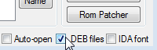

Содержание
Брейкпоинт (breakpoint, бряк, точка останова) - условие, при выполнении которого останавливается эмуляция игры. Условие помогает выловить код, отвечающий за какую-то задачу, например запись количества жизней в адрес игрока.
Изучив типы брейкпоинтов и потренировавшись в их создании, а также обладая опытом в использовании кнопок для отладки кода, материал станет более понятным.
Если во время игры условие одного из активных брейкпоинтов будет выполнено, эмулятор станет на паузу, будет вызвано окно Debugger'а, а сам брейкпоинт подсветится в списке синим цветом (как при выделении кликом мыши). Адрес инструкции, которая вызвала срабатывание брейкпоинта, будет также выделен синим.
Брейкпоинт срабатывает при
Если эмулятор становится на паузу из-за Debugger'а, значок паузы в окне эмулятора не отображается, в отличие от выставления на паузу горячей клавишей Pause.
Приоритет брейкпоинтов определяется положением в списке, чем выше, тем важнее. Если попытка выполнить инструкцию потенциально приводит к срабатыванию нескольких брейкпоинтов одновременно, то сработает лишь верхний из них, а срабатывание остальных на текущей инструкции будет проигнорировано.
Выбери опцию для отображения информации по списку брейкпоинтов и его хранению.
| Список брейкпоинтов | Хранение списка брейкпоинтов |
Список со всеми брейкпоинтами отображается здесь.

Максимальное количество брейкпоинтов в списке = 64 (#$40).
Строка "Breakpoints 01 of 02" (Hex-числа) означает, что в данный момент активен 1 из 2-х брейкпоинтов, добавленных в список. Брейкпоинт можно активировать/деактивировать двойным кликом.
Также можно кликнуть на нем правой кнопкой мыши и выбрать Toggle Breakpoint.
Рядом с адресом брейкпоинта указаны 6 флагов условий. Буква E (Enable) означает, что данный брейкпоинт активен. Если брейкпоинт деактивирован, то вместо буквы E стоит прочерк.

Про значения остальных флагов ты узнаешь в подразделах этой статьи.
Брейкпоинты, даже деактивированные, замедляют работу эмулятора, поскольку эмулятору при выполнении каждой отдельной инструкции в любом случае нужно просматривать список брейкпоинтов на то, активны эти брейкпоинты или нет. И чем больше брейкпоинтов в списке, тем выше будет нагрузка.
Если кликнуть на брейкпоинт из списка, станут активными кнопки Delete и Edit.

Кнопка Delete удаляет выделенный брейкпоинт из списка. Кнопка Edit вызывает окно редактирования Edit Breakpoint.

Окно Edit Breakpoint аналогично окну Add Breakpoint, вызываемого при добавлении брейкпоинта кнопкой Add, но при редактировании в окне будут отображены текущие данные выделенного брейкпоинта.
Список брейкпоинтов сохраняется в одноименном файле .deb, который создается/обновляется после закрытия эмулятора.

В этом файле также хранится список закладок из окон Debugger и Hex Editor.
Файл можно пересылать своим знакомым, которые могут помочь тебе с игрой, чтобы у тех также появился список необходимых брейкпоинтов/закладок. Чтобы эмулятор мог увидеть этот файл, нужно его правильно переименовать под ROM.
Список брейкпоинтов считывается при первом открытии Debugger'а, если в нем стоит галочка DEB files внизу окна.

Если галочка не стоит, файл .deb не будет создаваться/обновляться после закрытия эмулятора. Деактивированная галочка вызовет отсутствие списка брейкпоинтов/закладок в Debugger'е и закладок в Hex Editor'е.
Если галочка не стояла при запуске эмулятора, то первое ее включение приведет к тому, что данные файла будут полностью перезаписаны при закрытии эмулятора, а не синхронизированы с уже существующими данными одноименного файла.
Если в списке содержатся активные брейкпоинты, они не будут срабатывать даже при выполнении их условия в том случае, если после запуска эмулятора окно Debugger'а не было предварительно открыто вручную через эмулятор.